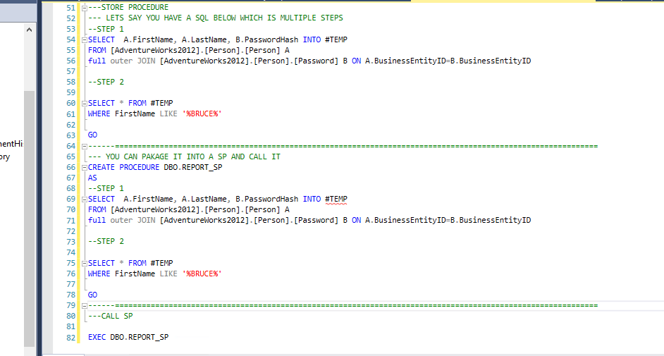

SQL Stored Procedures
A store Procedure is basically a set of SQL commands which you can package it and re use again and again.
If you have a long SQL script which you need to run everytime, you can make it a procedure and call it in one line.
EXAMPLE
Lets say you have to build a report every week , where we need to pull Password information of persons with FirstName='bruce', we can write the script and create a SP and execute it in one line.
See below Screenshot for how its done in SSMS.
Advantages of Store Procs
1.Performance : By grouping SQL statements, a stored procedure allows them to be executed with a single call. This minimizes the use of slow networks, reduces network traffic, and improves round-trip response time.
2.Productivity and Ease of Use : By designing applications around a common set of stored procedures, you can avoid redundant coding and increase your productivity.
3.Scalability : Stored procedures increase scalability by isolating application processing on the server.
4.Maintainability : Once it is validated, a stored procedure can be used with confidence in any number of applications
5.Interoperability: The RDBMS allows a high degree of interoperability between Java and PL/SQL. Java applications can call PL/SQL stored procedures using an embedded JDBC driver. Conversely, PL/SQL applications can call Java stored procedures directly.
6.Security : You can restrict access to data by allowing users to manipulate the data only through stored procedures that execute with their definer's privileges. For example, you can allow access to a procedure that updates a database table, but deny access to the table itself.